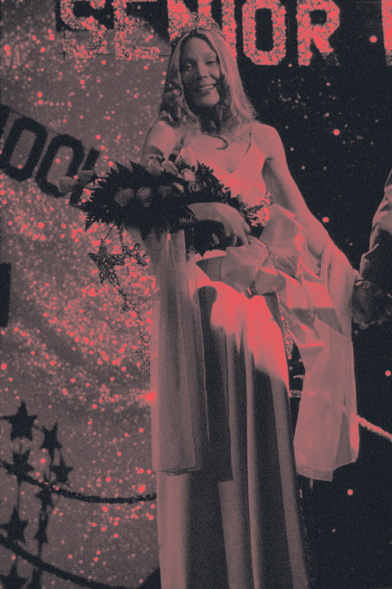
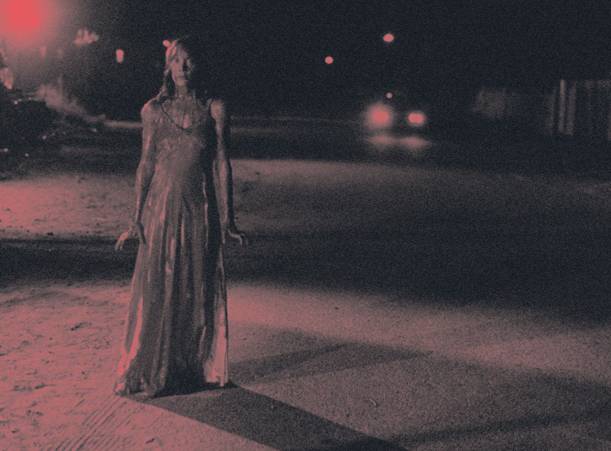

carrie
de DE PALMA brian (1976).
Le film se centre sur l'adolescente Carrie White, la souffre-douleur des élèves de son lycée, qui découvre qu'elle possède des pouvoirs de télékinésie après les humiliations que lui font subir ses pairs, certains enseignants et la torture psychologique de sa mère.
 - DISTRIBUTION
- SPACEK Sissy : une adolescente souffre-douleur de ses camarades de classe
- LAURIE Piper : Margaret White, mère de Carrie et fanatique de la religion
- IRVING Amy : Susan Snell, jeune lycéenne décidant d'aider Carrie
- PKATT William : Tommy Ross, ami de Sue et cavalier de Carrie au bal
- ALLEN Nancy : Chris Hargensen, peste du lycée et commanditaire de la blague de mauvais goût au bal
- BTRAVOLTA John : Billy Nolan, loubard et petit ami de Chris
- BUCKlEY Betty : Miss Andrea Collins, professeur de sport qui défend Carrie
- POINTER Priscilla : Charlotte Snell, mère de Sue
- SOLES P. J. : Norma, lycéenne rebelle avec une casquette de Baseball
- LASSICK Sydney : M. Fromm, professeur de français
- GIERASCH Stefan : M. Morton, proviseur du lycée
- DE PALMA Cameron : Tommy Erbter, un petit garçon d'école maternelle
- FICHE TECHNIQUE
- Titre original : Carrie
- Réalisation : Brian De Palma
- Scénario : Lawrence D. Cohen d'après le roman de Stephen King
- Musique : Pino Donaggio
- Genre : horreur, fantastique, drame
- Durée : 98 minutes